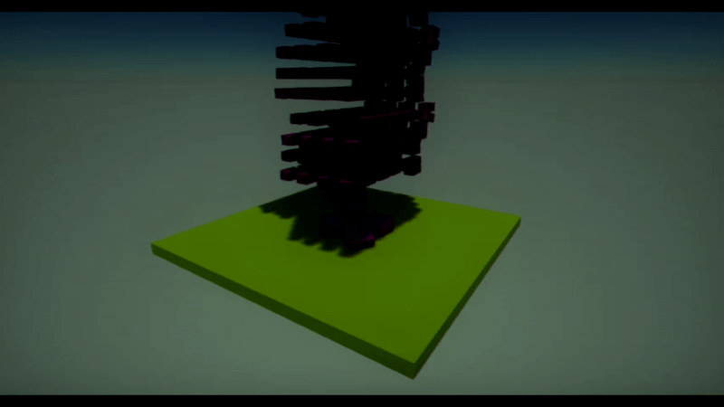

Physics Simulation

Flax Engine provides real-time physics simulation including collisions, gravity and other forces. Using in-build physics engine helps with creating a realitic behaviour for objects. This section explains how physics actors work, how to add them to your game, and how to use them with C# scripts.
Flax uses PhysX 4.1 physics engine to drive its physical simulation calculations and perform all collision calculations. PhysX provides the ability to perform accurate collision detection as well as simulate physical interactions between objects within the world.
In this section
- Colliders
- Rigid Bodies
- Character Controller
- Triggers
- Joints
- Raycasting
- Collisions
- Physical Material
- Physics Settings